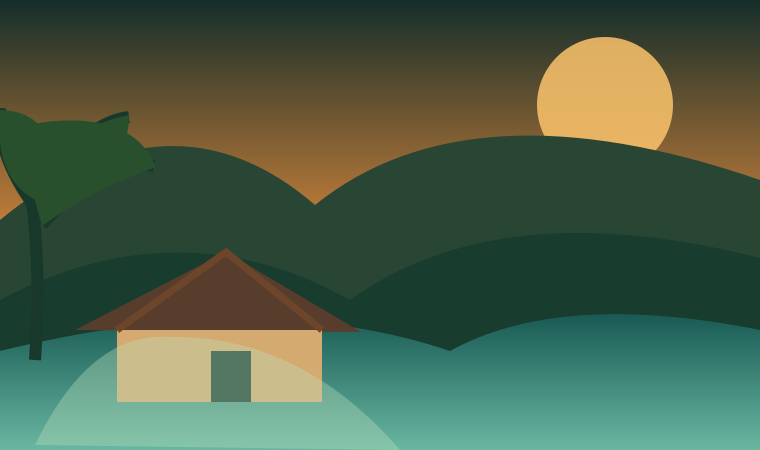
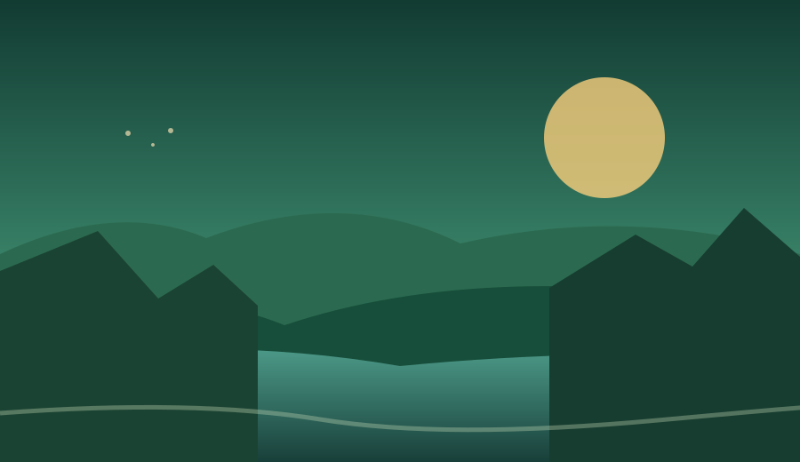

01 / BRAZIL
Where creativity took root.
My story began in Bahia, Brazil. Its colour, warmth and resourcefulness still influence how I approach design and ideas.
Caju & Clover grew from a Brazilian story shaped in Ireland, and a belief that great technology should feel creative, useful and human.
Discover our story ↗
Founded in 2026, Caju & Clover brings together the places, people and ideas that shaped its founder.

My story began in Bahia, Brazil. Its colour, warmth and resourcefulness still influence how I approach design and ideas.

After more than a decade in Ireland, this became another home. My background in Computer Science and experience leading teams helped turn curiosity into a practical approach to technology.
I founded the studio to bring both worlds together: Brazilian creativity, Irish perspective and technology that helps real businesses move forward.
Explore my personal portfolio ↗Caju is the Portuguese word for cashew, a colourful fruit that represents Brazilian roots, imagination and warmth. Clover reflects Ireland, the place where a second chapter of this story unfolded.
Caju & Clover brings those two worlds together: a bit of Brazilian flavour and Irish good luck, backed by the creativity and technical care to build things that work.
We believe the best digital solutions are clear, dependable and easy to use. Beautiful design matters, but it should always serve a purpose.
Explore our services ↗Tell us what your business needs and we'll explore a practical way forward.
Start a project ↗